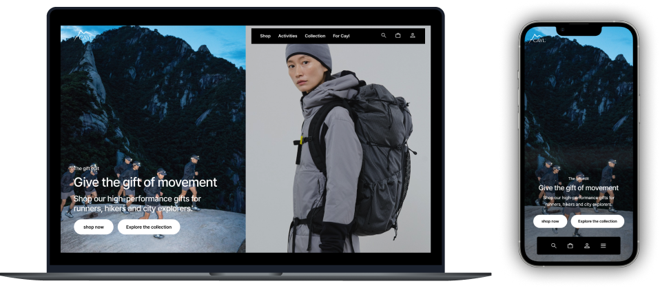
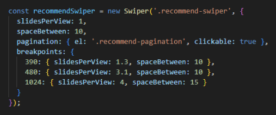
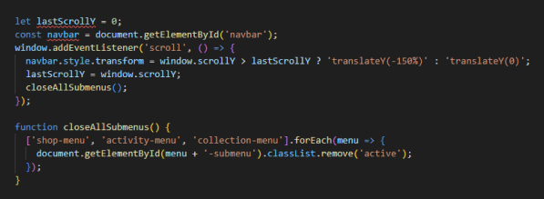

Responsive
Web Redesign
Overview
CAYL은 트렌디한 감성과 미니멀한 스타일로 국내 MZ 세대뿐 아니라 글로벌 시장에서도 주목받는 아웃도어 브랜드입니다.
하지만 기존 웹사이트는 브랜드 아이덴티티 부족, 단조로운 레이아웃, 정보 접근성 문제로 사용자 경험이 저하되어,
이를 개선하고 CAYL의 아이덴티티를 강조하기 위해 리디자인을 진행하게 되었습니다.
Renewal Direction
As-is
브랜드 아이덴티티의 부재
브랜드 고유의 감성과 메시지가 소비자에게 효과적으로
전달되지 않음
단조로운 레이아웃
트렌디하고 감성적인 브랜드 이미지에 비해
단조롭고 평험한 웹사이트
정보 접근성과 사용자 경험 저하
상품 이미지의 통일성이 부족하고,
가독성과 내비게이션바의 사용성이 저하됨.
To-be
브랜드의 감성과 아이덴티티를
디자인 스타일과 시각적 요소로 반영
다양한 레이아웃과 애니메이션으로
유저의 흥미 유도
통일성 있는 디자인으로
정보 전달력과 사용성을 강화
Design Style Guide
STYLE KEYWORD
Modern
모던
Clam
차분한
Minimal
미니멀
Typography
Pretendard
영문
프리텐다드
국문
Color
Primary
Modern Black
#181818
Background
#FFFFFF
#F6F6F6
#FAF7F6
Point
브랜드 감성을 반영하여 채도가 낮은 Graish Blue 계열을
포인트 컬러로 사용하여, 차분하면서도 현대적인 분위기를 연출
#495661
#88A1B7
Publishing
- @media 미디어 쿼리를 활용하여 반응형 웹 디자인 대응
- flex, position, grid를 활용한 레이아웃 구성
- JavaScript, jQuery를 활용한 메뉴 인터랙션
- Swiper.js의 Breakpoints를 활용한 이미지 슬라이드 쇼 구현
- currentScrollY 값을 활용한 스크롤 이벤트 적용
- AOS(Animate On Scroll) 라이브러리의 fade 애니메이션 효과 활용
- :root 변수를 정의하여 재사용성, 유지보수성 개선
- transition을 사용해 자연스러운 움직임 구현
Problems
Solutions
-
Q. 반응형 디자인에서 화면 크기에 따라 스와이퍼 슬라이드 수를 제어하려면?
Swiper의 Breakpoints 기능을 이용해 화면 크기에 맞춰 슬라이드 수(slidesPerView)와 슬라이드 간격(spaceBetween)을 조정. 이를 통해 모바일, 태블릿, 데스크탑 등 다양한 화면에서 최적화된 슬라이더 구성 가능.
 -
Q. 스크롤 이벤트 시 네비게이션바와 서브메뉴의 동작이 연동되지 않을 때는?
네비게이션 바와 서브메뉴 상태를 JavaScript의 스크롤 이벤트와 클릭 이벤트로 함께 관리. closeAllSubmenus();를 사용해 서브메뉴를 닫고, 네비게이션 바는 스크롤 방향에 따라 표시/숨김 처리. 이를 통해 스크롤 동작이 자연스럽게 연동되어 화면 공간을 효율적으로 활용.
 -
Q. 백그라운드 이미지에 transform: scale 효과를 줄 때 border-radius가 보이지 않을 경우 해결 방법은?
자식요소를 따로 생성해 background-image와 transform: scale을 적용한 뒤, 부모 요소에 overflow: hidden을 설정하면, 마우스 호버 시 배경 이미지가 확대 되어도
border-radius가 유지.
Review
이번 프로젝트는 리디자인부터 퍼블리싱까지 모든 과정을 주도적으로 진행한 첫 반응형 웹 제작 경험이었습니다. 모바일(390px)과 웹(1024px) 중심으로 작업하며 완성도를 높였지만, 태블릿 등 다양한 화면 크기를 세밀하게 고려하지 못한 점은 아쉬움으로 남습니다.
하지만 단조로울 수 있었던 웹사이트를 세련된 디자인과 생동감 있는 요소들로 재구성하며 사용자 경험을 한층 개선할 수 있었던 점은 큰 보람으로 다가왔습니다.
특히, 이전에 시도해보지 않았던
새로운
이벤트 구현에 도전하며 퍼블리싱 실력을 한층 성장시켰고, 기획부터 제작까지 스스로 완수하며 얻은 성취감은 큰 자산이 되었습니다.
이번 프로젝트를 발판 삼아 다양한 디바이스에 최적화된 반응형 웹을 제작하고, JavaScript와 jQuery 학습을 통해 전문성을 더욱 강화해 나가겠습니다.